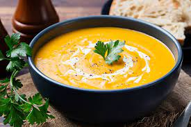

Pumpkinsoup

Ingredients
- Pumpkin
- Onion and garlic
- Stock/broth and water
- Milk, cream or half and half
Steps
- Place peeled pumpkin, onion, garlic, broth/stock and water into a pot;
- Boil rapidly for 15 minutes until pumpkin is very tender;
- Use a stick blender or transfer to blender to blitz smooth; and
- Adjust salt and pepper to taste, then add either milk OR cream – whichever you prefer.